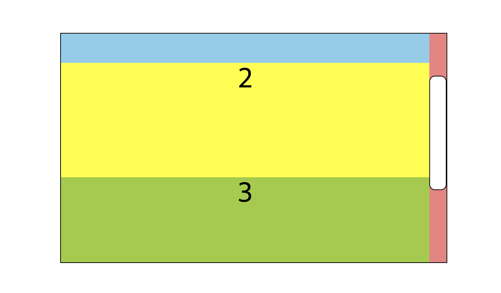

CSS요소4 - 레이아웃
layout
▶️ display
1. 박스요소의 기본값을 변경 (block, inline, inline-block)
- block
.box {
display: block;
}
- 세로방향으로 배치된다
block은 부모요소의 너비의 100%의 영역을 차지height를 지정해줘야 보인다
- inline
.box {
display: inline;
}
- 가로방향으로 배치
inline은 내용부분만큼만 영역을 차지한다width나height가 적용되지 않음
- inline-block
.box {
display: inline-block;
}
- inline과 동일하게 가로방향으로 배치된다
height,width가 적용된다input,button..
- none, hidden
.box {
display: none;
}
.box1 {
visibility: hidden;
}
display: none: 코드 상으로 존내하지만 보이지 않음 (랜더링할때 아에 무시된다)visibility: hidden;: 레이아웃 상에 공간을 차지하지만 눈에 보이지 않는다
▶️ float
요소를 배치할 수 있는 속성
.box {
float: left;
}
none(기본값),left,right- 자신의 부모 요소를 기준으로 배치된다
- 요소의 위에 배치된듯한 느낌을 준다
▶️ normal flow
일반적인 흐름으로 레이아웃을 변경하지 않았을때이다
- 블록 요소와 인라인요소에 따라 배치된다
▶️ position
어떠한 대상을 기준으로 요소를 배치한다 (기본값은 static)
.box {
position: relative;
}
static(기본값),relative,absolute,fixed,stickystatic: top, bottom, left, right값을 줘도 영향이 없다(기본값)relative: 일반적인 문서흐름에 배치하나, 자기 자신을 기준으로 top, bottom, left, right에 따라 요소를 배치한다absolute: 요소는 일반적인 흐름에서 벗어나고, 자신의 부모요소(static이 아닌 요소)를 기준으로 top, bottom, left, right값만큼 떨어진 곳에 요소를 배치한다fixed: 일반적인 문서흐름에서 벗어나고, 뷰포트(창)를 기준으로 top, bottom, left, right값만큼 떨어진 곳에 요소를 배치한다- 화면에 고정된 것처럼 보인다
- 항상보이는 메뉴바, 최상단으로 올라갈 수 있는 버튼에 많이 사용된다
sticky: 일반적인 문서흐름에 따르나, 가장 가까운 스크롤 되는 부모요소를 기준으로 요소가 동작한다- 어느 위치에 걸리는듯한 느낌을 준다
- 스크롤되는 요소의 자식이어야한다
- top, bottom, left, right값은 음수값을 사용할 수도 있다
- 반대가 되는 (top, bottom), (left, rignt)를 동시에 사용하게 되면 top과 left가 우선된다
▶️ overflow
단축속성으로 내용이 요소의 크기를 벗어났을때 어떻게 처리할지를 지정한다
.box {
overflow: visible;
}
visible,hidden,scroll,autovisible: 넘어서더라도 눈에 보인다(기본값)hidden: 보이지 않게 한다scroll: 스크롤이 되는 요소로 만든다auto: 넘치면 스크롤 넘치지 않으면 그대로(visible)- x축과 y축을 설정할 수 있다(
overflow-x,overflow-y)
▶️ 스크롤바 바꾸기
브라우저 마다 기본적으로 제공하는 스크롤바의 모양이 다르지만, css(선택자)를 이용해서 스크롤바를 커스텀할 수 있다
<!-- HTML -->
<div class="container">
<div class="box">1</div>
<div class="box">2</div>
<div class="box">3</div>
<div class="box">4</div>
<div class="box">5</div>
<div class="box">6</div>
<div class="box">7</div>
</div>
<!-- CSS -->
<style>
.box {
border: 1px solid black;
width: 30%;
height: 400px;
overflow: auto;
font-size: 50px;
text-align: center;
}
.box .item {
height: 200px;
}
.box .item:nth-child(1){ background-color: skyblue; }
.box .item:nth-child(2){ background-color: yellow; }
.box .item:nth-child(3){ background-color: yellowgreen; }
.box .item:nth-child(4){ background-color: coral; }
.box::-webkit-scrollbar{
/* 스크롤바의 너비 */
width: 30px;
}
.box::-webkit-scrollbar-thumb {
/* 스크롤 위치를 나타내는 바 */
background-color: white;
border: 1px solid #000;
border-radius: 10px;
}
.box::-webkit-scrollbar-track {
/* 스크롤부분의 배경 */
background-color: lightcoral;
}
</style>
결과

::-webkit-scrollbar-thumb: 스크롤바의 색상::-webkit-scrollbar-track: 스크롤바 이외 부분(트랙)의 색상
▶️ z-index
z축(사용자에게 보여지는)의 순서를 지정한다(높을수록 위로 쌓인다)
.box {
z-index: 10;
}
- 기본값은
auto이다 - 정수(음수, 0, 양수) 사용가능
- 요소가 겹쳐있는 경우
z-index가 높은것이 더 위로 올라온다 position: static인 요소는 뒤로 배치된다